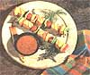
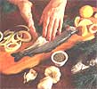

MOTHER'S KITCHEN
Rekindle one of the best meals of summer.
O ver the years some of us have managed to develop a fish phobia. Perhaps it's those childhood memories of the lingering aroma of fish sticks that we were forced to consume every Friday.
Or what about the cooler full of huge, slimy, bulging eyed fish that Uncle Fred used to bring back from his fishing trips? And that smell-even the freshest fish leaves a slight odor when prepared indoors.
Even if we cast our experiences aside, we might think that fish is too time consuming in comparison to our usual grilling fare of brats and burgers. We might also feel compelled to comb cookbooks, searching for fancy sauces and marinades to disguise the fishy flavor or dry texture. The truth is, these are just fish stories. Fish actually requires very little attention if you buy fresh steaks or fillets and requires less grilling time than chicken or burgers. As long as the fish isn't overcooked, it'll be juicy and delicious with or without a marinade.
When it comes to nutritional benefits, fish has the brats beat. Fish is far lower in fat than other meats, especially the infamous saturated fat that is a major contributor to heart disease. The fat that is present in the fish has the famous omega-3 fatty acids which help to prevent blocked arteries, and consequently heart disease. A study in the Netherlands showed that eating fish only twice a week can reduce the risk of having a heart attack by 50 percent. The amount of omega-3 present in the fish depends on how fatty the fish is (salmon is higher), and whether the fish was farm raised, in which case the quality of the fish food varies. The fattier fish (which are still at least 20 percent lower in fat than beef) also contain an antioxidant called coenzyme Q, which is believed to be more effective than vitamin E when it comes to lowering the bad guy LDL cholesterol in your body.
Today folks must be casting aside those fish fears in favor of the seafood because fish consumption is on the rise. Still worried about that smell? For those of you men who are the Macho King of the BBQ, fish may not have the same prestige as a side of beef, but the neighbors will be mighty impressed when you gracefully flip over a five-pound lake trout. Think that you can't really sink your teeth into a fish fillet? Try the meaty, steak like swordfish shark or tuna steaks. Whatever your phobias, it's time to fire up that grill for a delicious fish dinner. Here are some tips to get you started.
Fish and Vegetable Kabobs
This is a good family meal that goes well with corn on the cob and a summer salad. Use a meaty fish that will stay on the skewer. We've used mako shark, swordfish, monkfish, and bass-depending on the sale of the week. Serves four.
1 1/2 pounds firm-fleshed fish, skinned and cut into 1-1 1/4-inch chunks
2 medium summer sweet peppers (any color), seeded and cut into chunks
16 cherry tomatoes
2 small medium summer squash (or yellow zucchini), sliced in 1/3-1/2-inch circles
Marinade
2 tablespoons olive oil
2 tablespoons dijon mustard
1 tablespoon dry sherry
1 tablespoon honey
2 tablespoons lemon juice
2 large garlic cloves, minced salt, pepper, dash cayenne pepper
4 skewers
Whisk the marinade ingredients together. Put the fish and vegetable chunks in a large bowl. Toss with the marinade. Cover the bowl with plastic wrap and chill for 30 minutes to an hour. Prepare the charcoal grill. Skewer the fish and vegetables. When the fire is ready, grill the kebabs about three minutes per side, turning them so they don't burn in one spot. Baste with a little of the remaining marinade. Total cooking time will probably not exceed 10 minutes.
Whole Fennel Trout
You can also use whole (scaled) white fish. If a fresh fennel bulb isn't available, stuff the cavities of the fish with any garden herbs that you may have on hand. It's best to use a fish rack when grilling a whole fish; an inexpensive hamburger rack will work fine. Be sure rack is clean and greased.
4 whole trout (8-10 ounces each), cleaned
4 tablespoons (or less) extra-virgin olive oil
2 medium fennel bulbs with leaves
6 large cloves garlic, peeled, sliced thin lengthwise
2 lemons, cut into wedges
salt, freshly ground pepper, cayenne pepper or paprika
Slice the stalks and leaves from the fennel, reserving the leaves. Cut out the round core of the fennel bulb. Slice 1/4-inch slices across the bulb so it's cut into hollow circles. Set aside. Simmer the garlic slices in the oil until they're softened but not browned.
Pat the cleaned fish dry with paper towels inside and out. Rub the cavities of the fish with lemon and place some of the garlic slices inside. Rub the outside of the fish thoroughly with oil, leaving some garlic and oil in the skillet for the fennel slices. Finish stuffing the cavities with chopped fennel leaves, saving some for garnishing the finished dish. Place the fish on greased fish rack, side by side. Top with whole fennel leaves.
While you're waiting for the coals, saute the fennel in the skillet on medium-high heat until it's lightly browned and tender. Place the fish rack on the grill. Grill four to five minutes per side. Remove the fish and serve with lemon, removing the crispy external fennel leaves. Sprinkle the remainder of chopped leaves on fish and fennel.
Ginger Salmon with Salad Greens
To save time, use some of the marinade for the dressing for the salad greens. Serves two to three. 2 salmon steaks or fillets (7-9 ounces each)
about 4 cups mixed greens from the garden or a grocery mesclun mix (add arugula or watercress for a more peppery taste)
2 green onions, sliced diagonally, or 1 small red onion, sliced into thin circles
10 cherry tomatoes, halved, or homegrown tomatoes, quartered
Marinade/Dressing
2 large garlic cloves, peeled and coarsely chopped
1 tablespoon ginger root, peeled and grated
1 teaspoon sugar
2 tablespoons sesame oil (or canola oil)
1 tablespoon tamari (soy sauce)
2 tablespoons sherry vinegar (or white wine vinegar)
2 tablespoons rice vinegar
1 tablespoon lemon juice
1/8 teaspoon cayenne pepper
freshly ground pepper
Mix all marinade ingredients well in a blender. Wash the salmon in cold water and pat dry and place in a glass casserole or pie plate. Pour only half the marinade over the fish. Turn the fish so both sides are covered. Save the rest of the marinade for the salad. Cover the fish with plastic wrap and refrigerate for 30 minutes to an hour. Wash and dry the salad greens and prepare the salad without the dressing. When the coals are medium hot, grill the salmon for five minutes on each side (per inch of thickness), basting with the marinade if necessary. Discard any unused fish marinade. Toss the salad with the reserved dressing and arrange on a large plate. Serve fish on top of the salad.
Swordfish Stealcs With Herbs Any firm-fleshed fish steak will work. Herb-pesto marinade will add flavor to mild-flavored fish. 4 swordfish steaks, cut to about 1 inch thick for ease of grilling (about 1/2 pound each. If they're large, you may want to cut them in half)
2 large cloves garlic, peeled
1 cup fresh (curly) parsley
1 teaspoon paprika
1/4 teaspoon cayenne pepper
1 1/2 teaspoon ground coriander
1 teaspoon ground cumin
1/4 cup lime juice and 1/4 cup lemon juice (or all lemon juice)
1/4 cup olive oil
Rinse the fish in cold water and pat it dry. Place in a large covered plastic bowl or dish. Chop the garlic, cilantro, and parsley in a food processor (or mince by hand). Blend in the rest of the ingredients so that the marinade resembles a pesto. Smear the pesto on each side of the fish and stack the steaks in the bowl. Cover and refrigerate them for at least 30 minutes, but not more than two hours. While you're waiting for medium-hot coals, place the steaks on a platter. Spread the marinade on the steaks and salt and pepper them. Grill four or five minutes per side and transfer to a serving platter. Be sure not to overcook them or they'll be dry. Serve with grilled potatoes and a green salad.
Fast Fish
This is for when you're in a "let's slap the fish on the grill and throw on a few hot dogs for the kids" mood. This works best with fish steaks that have a firm flesh. 3-4 firm-fleshed fish steaks or fillets (tuna, swordfish, shark, halibut, salmon, or even catfish)
1 cup of your favorite bottled salsa (we use Arriba smoked tomato salsa) or your homemade salsa
2 tablespoons lime juice
freshly ground pepper
chopped cilantro leaves (optional)
Place the fish steaks in a shallow pan (like a glass pie plate), patting them dry with a paper towel. Mix together the salsa, lime juice, and ground pepper in a small bowl. Spoon over the steaks, flip the steaks over, and spoon onto the other side. Cover with plastic wrap and start the fire. Grill the steaks when the fire is ready for about 10 minutes (5 minutes per side) an inch. Serve them immediately, topped with cilantro.
Grilling Tips
• A cold fish sticks to the grill, so remove the fish from the refrigerator just before you start the fire.
• When you're preparing the coals, add some mesquite or other wood chips to give the fish a distinct smoky flavor. Soak the chips in water for at least 20 minutes before using or add some at the start and again just before removing the fish.
• Cook your fish on a medium fire, which means that you can hold your hand six inches above the coals for three or four seconds without screaming.
• To cover or not to cover? That depends. If you have a Weber-style grill, you'll probably want to at least partially cover anything that you grill so it will have a smokier flavor. With fish it's best to only cover larger fish steaks or a whole fish which takes longer to cook.
• Brush excess char off of the grill with a wire brush, or clean a warm grill with wax paper. Let the grill heat up, then brush it with olive oil, using a basting brush or a new paint brush. The fish should sizzle when it hits the grill.
• If you're grilling a whole fish, it's best to use a rack so you can flip it over easily.
• If the fish are small, use a wire basket so they don't fall into the inferno.
• Cook the fish approximately 10 minutes per inch at the thickest part of the fish (5 minutes per side). Turn the fish only once. Don't overcook, which will cause the fish to be dry, but press the fish for frmness. Remove the fish from the grill when it's slightly underdone, not watery but still a bit translucent, because it will continue to cook as it sits.
Selecting Fresh Fish
• A fish should smell like a fish without having a strong, fishy odor. (Don't buy shark with an ammonia smell.) Don't be afraid to ask the store clerk to let you smell it.
• If the fish is whole, look for clear, bright, intact eyes; this alone isn't always a reliable sign.
•If you're buying fillets, look for flesh that's shiny and translucent instead of dull or dry.
•Avoid buying fish early in the week. Ask the store manager which days the fish is delivered.
•Have the fish market scale, clean, or fllet the fish for you.
• Avoid buying fish packed in plastic. The fish should be on ice since the colder temperature keeps it fresh longer.
|
The photographer had to beat the staff off |
 with a stick just to get a close-up of the kabobs. |
 |